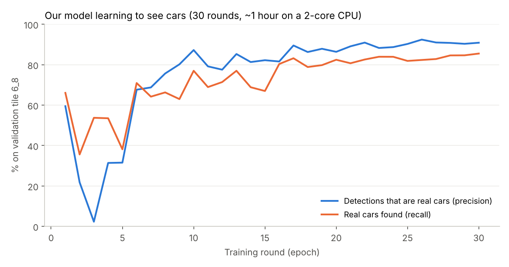
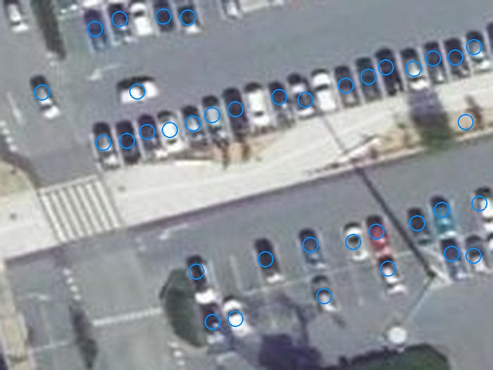

Prototype 3 · The data behind the AI
Can we train our own car counter from scratch?
Case: Orbital Insight. In Prototype 2 we reused a ready-made model; here we train one ourselves.
1. What we did
We started from YOLO11n, a small general-purpose detector trained on everyday photos (COCO). It had never seen an aerial image. COWC marks each car with one dot, so we turned every dot into a 3.6 m square box. We resampled every image to 10 cm per pixel, and added a blurred, compressed copy of each tile so the model would also learn the softer look of French IGN photos. Training: 30 rounds with random rotations and flips, about one hour on 2 CPU cores.
| Data | Tiles (COWC Potsdam) | Cars marked by hand | Used for |
|---|---|---|---|
| Training | 2_10, 2_11, 2_13, 3_10 | 515 | Teaching the model |
| Validation | 6_8 | 188 | Watching progress, choosing the confidence cut-off (0.20) |
| Test | 2_12 | 113 | Final score only, never seen before |

2. Test on a tile neither model was trained on (COWC 2_12)
| Model | Learned from | Counted | Right | False alarms | Missed | Found | Right of counted |
|---|---|---|---|---|---|---|---|
| Ours (YOLO11n) | 515 cars, 4 tiles, 1 hour CPU | 110 | 73 | 37 | 40 | 65% | 66% |
| Ready-made (YOLO11m-OBB) | DOTA: 2,806 images, 188,282 objects | 98 | 92 | 6 | 21 | 81% | 94% |
Both models count about the same number of cars (110 vs 98, truth 113), but ours gets there partly by luck: it misses 40 real cars and makes up 37 others. Most of its false alarms are far from any car, on roof windows and grass. With so few examples it has not learned what is not a car.

3. On the French IGN photo of Auchan Englos
We ran both models on the same area we checked by eye in Prototype 2. Here they are roughly equal: ours found about 87 of ~100 cars with 2 false alarms, the ready-made one about 89 with 1. Ours needed no hand-tuned sharpening, because it was trained on softened copies. Open car parks with cars on plain tarmac are easier than Potsdam's tree-lined streets.


4. What it means for Orbital Insight and a new entrant
The model architecture is free; the labels are not. We used the same kind of free detector as the ready-made model. What separated 81% from 65% of cars found was the number of labelled examples: 188,282 objects labelled by experts against our 515. Labelling is slow, paid, expert work, and it has to be redone for each new kind of image, as the IGN tuning in Prototype 2 showed.
But labelled data is no longer a lasting moat either. Public, free datasets like DOTA and COWC now give anyone a model trained on far more labels than a start-up could gather alone. Orbital Insight built its labelled history when such datasets were scarce, and that advantage shrank as they became public. What stays hard to copy is a long, consistent record of images of the same places, which is Prototype 4.
5. Limits
One test tile (113 cars) and one hand-checked IGN area (~100 cars, counted once by eye), so differences of a few points are noise. The models differ in more than data: ours is the small version (n), the ready-made one the medium (m), and only ours was trained with blurred copies. COWC gives dots, not car outlines, so our boxes are fixed 3.6 m squares. We trained for 30 rounds on a CPU; a GPU, more rounds and the eight unused Potsdam tiles would likely raise our score. Code written with an AI assistant and checked by us against the hand labels and by eye.